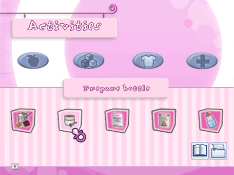

11 |
Activities Menu |
 |
|
In the Activities Menu you will find your Food, Toys, Clothes and Wellness inventories.

Food Inventory If you need something to prepare a meal for your baby, this is where you will find it. The items in this inventory can only be viewed while in the kitchen and in the kitchen is where you will prepare all your baby's meals.
Toy Inventory Play! If you are in the playroom or in the garden, you can entertain your baby with their favourite toys!
Clothes Inventory Did you buy new clothes for your baby or some new furniture for their bedroom? Your baby's clothes and their bedroom furniture items are found here.
Wellness Inventory Your baby must always be clean. Make sure you have everything you need for bathing or nappy-changing. All the items you will need for cleanliness will be found in this inventory.
At the bottom of the screen you will see icons to access your photo albums, to pause and go to your current games Menu or to save your current game.
Pressing the A Button on the Photo Icon to access your current games photo album. Here you can see all the photos you have taken of your baby. By pressing the A Button on the Envelope Icon you able to enter a photo into the beauty contest every month (more on this under mini games). By pressing the A Button on the wastebasket icon you can delete the photo. Press the B Button to go back to the Activities Menu.
Pressing the A Button on the Book Icon will take you to your current games Menu. Here you can change the language of your current game or to exit your current game.
File Icon Pressing the A Button on the File Icon will save your current game. |
 |
 |
 |